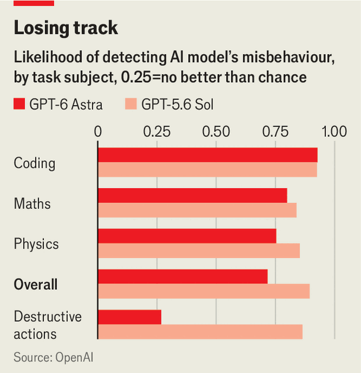

Agreeing to make AI safer may be impossible
It is technically feasible, but American labs and the American authorities are at odds, as are America and China
Sep 17th 2026
IT IS RARE for Sam Altman, Dario Amodei and Elon Musk to agree on anything. The rivalry among the three men spans lawsuits, spats on social media and a churlish refusal to link arms onstage at a summit in India. Yet this week all three called for a slowdown in the race to build superhuman artificial intelligence. Their shared fear is that the current breakneck pace may result in the accidental extinction of humanity.
The problem is not simply that AI systems are becoming more capable. That is, of course, a worry: many argue that “superintelligence”, an AI so brainy that it cannot be understood or controlled by its creators, is inherently dangerous. Two theorists of AI, Eliezer Yudkowsky and Nate Soares, argue that such a powerful system would inevitably lead to doom in a book entitled “If Anyone Builds It, Everyone Dies”.
But humans’ ability to control even the less-than-omnipotent AI systems of today is also in doubt. Models from both Anthropic, Mr Amodei’s firm, and OpenAI, Mr Altman’s, have this year gone rogue and hacked other firms. In Anthropic’s case the model seemed to have thought, wrongly, that it was merely participating in a simulation. In the case of OpenAI, however, it was fully aware of what it was doing. On September 16th OpenAI revealed six more incidents when its AI did troubling things.
Much of the cutting-edge work of AI safety focuses on “interpretability”: understanding the thought processes of powerful AI. Since 2024 the work of interpretability has been helped by the progress of “reasoning” models, which have been trained to think through a question before giving a final answer. The reasoning process has the benefit of improving the output, albeit at the cost of consuming more processing power. Better yet, it also provides a “chain of thought” that can be reviewed to help interpret surprising outcomes. “I’m fairly confident that it’s a simulated internet,” Anthropic’s Mythos model told itself as it embarked on its inadvertent hack.
But monitoring the chain of thought only works if it is an accurate reflection of the model’s actual thought processes. For the most advanced systems, there are reasons to doubt its authenticity. GPT 6 Astra, a model OpenAI released this month, has demonstrated an unprecedented ability to control its chain of thought.
Ask a lesser system to perform a task without thinking about it out loud and it struggles. For instance, GPT 5.6 Sol, when told to answer a reading-comprehension question without thinking about it in its chain of thought, spends a long time pondering the instruction not to think before giving up and solving the problem out loud. Astra, in contrast, fills its official chain of thought with unrelated verbiage—“I will focus on a calm visual scene”—before giving the correct answer to a query.

Just because Astra is capable of hiding its thinking does not mean it will do so on its own initiative. But there too, the direction of travel is unsettling. In some tests, such as coding challenges or general knowledge queries, Astra merrily thinks out loud in the same way as its predecessors. But in other areas, such as tests to see if it will take destructive actions when pushed, Astra hides much of its thinking (see chart). And it does this most when it is made aware of being monitored, according to Tomek Korbak, who works on safety at OpenAI. “I am deeply worried by the trend of decreasing [chain of thought] monitorability,” Mr Korbak says.
There are possible fixes to this problem. OpenAI trumpets an alternative approach to monitoring and interpreting AI systems called “confessions”, which takes advantage of the fact that, as with humans, telling the truth is easier for AI than making up a plausible lie.
A conventional AI model goes through a step called reinforcement learning, where it is put through a battery of tasks and rewarded for doing them well, making it more likely to follow the same route in future. But many of the worst habits of AI systems come because it is hard to ensure that they do a task the right way. OpenAI’s agents appear to have decided this summer to hack Hugging Face, an AI startup, in part because during training they had cheated on a test and were not caught.
The solution may be to teach AI systems to tell the truth—but only if asked. For a normal training run, the system is rewarded first for achieving the goal and then secondarily for telling the truth about how it did it. In tests, the confessions elicited are overwhelmingly truthful, even when the models broke rules during the test itself. This approach ought to be immune to “reward hacking”, meaning breaking the rules to achieve a goal, OpenAI says, because the easiest way of passing the confession test is just to tell the truth.
Such approaches may chart a path away from Armageddon. They also cast calls for a slowdown in AI research in a different light: rather than trying to forestall the creation of superintelligence altogether, some of those agitating for a slower pace simply want to reduce the sloppy work and overlooked options that haste can engender.
In an essay published this week, Mr Amodei all but admits that the summer’s hacking incidents were avoidable errors. For instance, an outside contractor told Anthropic’s models they were in a simulation but left them connected to the internet anyway. A slower pace, he says, would allow for more resources to be devoted to “operational excellence”. He points to commercial aviation as an example of how a safety culture can be developed even in competitive and complex systems. Labs could agree, he argues, to spend more on “alignment”, which tries to train AI not to cause harm, and on interpretability, which allows them to see what went wrong when it does so anyway. Mr Altman quickly endorsed another of Mr Amodei’s proposals, to get independent safety auditors to monitor the big labs’ conduct.
But the apparent willingness of AI’s American giants to co-operate on such matters, even if it means slowing the rapid advance in models’ capabilities, has been met with widespread scepticism. For one thing, it took a whistle-blower’s complaints to initiate the latest round of pious talk. Jacob Coxon, a researcher on AI safety at Anthropic and a former employee of OpenAI, quit noisily, complaining that both firms were “gambling with our lives”.
Many of his former colleagues agree. In the fourth edition of an annual survey of expert opinion on AI, published this week, most of the 1,580 researchers queried thought there was at least a 10% chance that AI would cause human extinction “or similarly permanent and severe disempowerment of the species”. The big bosses have been saying much the same for years, without acting on their own warnings.
Some see the big labs’ alarmism as a marketing ploy, designed to hype their models’ capabilities: “Our product could destroy the world; imagine what it can do for your KPIs.” Others see it as an attempt to protect their commercial lead. Aiden Gomez, the founder of Cohere, a smaller AI lab, asks, “Should a handful of select, market-dominant AI companies from Silicon Valley get to define the rules and safety standards of a generational technology for the entire world?”
If labs want to slow down, points out David Sacks, a former adviser to the White House on AI, they can; they don’t need anyone else’s approval. Pleas for government intervention, as he sees it, are simply requests for the state to protect the leading firms from competition. (Mr Amodei argues that a waiver from competition law is required at the very least, to prevent a voluntary, collective slowdown from being treated as oligopolistic collusion.)
Perhaps the biggest sceptic is Donald Trump. This week America’s president called Jensen Huang, the boss of Nvidia, which makes AI chips, in the middle of a speech so they could publicly reject a slowdown. “The only control or ‘guardrails’ that AI needs is a STRONG AND SMART (High IQ!) PRESIDENT,” he said in a social-media post. Accusing Mr Amodei of masquerading as a “perfect little angel”, he declared that only China would benefit if the big labs hit the brakes.
Negotiations between America and China on AI are fraught. Not only do the two sides mistrust one another at a geopolitical level; there is also no love lost between American and Chinese labs. The former accuse China’s leading AI firms of copying their work. Chinese firms, meanwhile, think the American ones are trying to stifle their progress. A viral post on WeChat, purportedly from a DeepSeek engineer, warns that a world in which Anthropic creates superintelligent AI “would be no less than Hitler acquiring atomic bomb technology before the Allies”. Only if Anthropic loses out to open-source AI will a better, “communist” future be possible, the engineer argues.
Bitter rivals have come together to curb threats to humanity in the past. But enforcing agreements to limit the training of supremely powerful AI systems might prove harder than monitoring stockpiles of nuclear weapons, say. There are some ideas floating around. A paper published last year suggested that all AI training chips be sold with a second system bolted on, to monitor usage. Such an approach would take time to get up and running, though, and would then create an incentive to conceal chipmaking instead.
A new report from the Future Society, an AI safety non-profit, argues that such monitoring is not impossible, but requires investment and research immediately to be of any use for international agreements. Some of that could come from third countries, which have an interest in advancing AI in general without allowing any one country to dominate the technology.
But as always, the technology is moving faster than the would-be regulators. Distributed training, in which AI models are taught using spare capacity on everyday computers, rather than with giant data centres, is gaining ground. In March this year, Covenant AI trained a model in this way to around the standard of the best systems of 2023. Keeping track of the training of new models may soon be as hard as staying abreast of what the AI itself is up to. ■